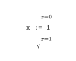

最近話しているこれは「事前事後条件に様相論理式を書かずにタイムスタンプ意味論のための並行プログラム論理をつくる縛りプレイ」なのですが、そのことが伝わっていないことがわかったので記事を書きました。
Floyd 論理はコマンドの事前と事後にそのときに成り立っている条件を書くといったアイデアで設計されていて、
Hoare 論理はさらに事前条件・コマンド・事後条件の三つ組を判断とする証明木を扱うように設計したものです。
Hoare 論理の利点の一つに事後条件から事前条件が求まる（例：1=1 {x:=1} x=1）といったことがあり、これが証明体系の中で証明をつくる営み（証明活動）を提供してくれています。
タイムスタンプ意味論のための並行プログラム論理をつくろうとすると事前事後条件に様相論理式を書きたくなる誘惑があります。というのも、タイムスタンプ意味論では共有変数の値がメモリの中に複数あるため、x の値はずっと 1 である □x=1、x の値は 1 かもしれない ◇x=1、をアサーション言語に追加するのが自然に思えるからです。
様相論理式を入れるとロード命令の代入文の公理を自然に書けます。まず、x=1 {r:=x} r=1 はタイムスタンプ意味論の下では健全ではありません。なぜなら、事前条件 x=1 は今この瞬間 x が 1 に見えているというだけであり、メモリの中には x の値が 2 である（現在時刻以降のタイムスタンプ付）メッセージがあるかもしれず、もしそれをロードしたら r=2 となるからです。その一方、□x=1 {r:=x} r=1 は健全です。□x=1 がメモリの中にある（現在時刻以降のタイムスタンプ付）メッセージのすべてが x の値が 1 であることを保証しているからです。
Hoare 論理をベースにしているものは逐次合成の推論規則を持つので、あるコマンドの事前条件はその一つ前の事後条件ということになります。例えば、事前条件 □x=1 を事後条件とするコマンドの事前条件を求める……、といったことをしていくことになります。例えば、ストア命令の代入文の公理の例は □x=1 {y=2} □x=1 （ただし、x≠y）だったり、□x=1 {x=1} □x=1 だったりします。つまり、一度、ロードをするとそれ以前の代入文には□がついてまわったり、事前事後条件に同じ論理式を書くことになったりします。
「Floyd 論理はコマンドの事前と事後にそのときに成り立っている条件を書くといったアイデアで設計されている」のですが、そこに様相論理式を書くということは「そのときにそのとき以降に成り立っていることを言及している」ことになります。それはちょうどプログラム全体を見渡して見つけた不変条件のようなものになっています。このように考えると、事前事後条件に様相論理式を使った並行プログラム論理は、人力やソルバ等により外部で見つけた条件が不変であるかそうでないかのチェッカであると見なせます。
今回は証明体系の中で証明をつくる営み（証明活動）を重視しました。最近、循環証明体系が流行っていますが、あれは、伝統的な証明体系が外部で見つけたよい補題で帰納法がまわるかのチェッカの役割を果たしているのに対し、示したい論理式（ゴール）を証明木の根に置いて証明木を下からつくっていけるものにしたという、より証明体系の中で証明をつくっていきたいという思いが込められているもののようにも見なせます。
同じように、今回はその証明体系において「事後条件から事前条件が求まる」を重視し、しかし、元のままではタイムスタンプ意味論の下では健全ではないという欠陥を、スレッド ID リプレイスメントと非干渉性条件の拡張という手法で克服した、といったものでした。技術の詳細は論文をご覧ください。